TechUAV Wiki
Эта страница не содержит исполняемого кода.
WARMATE 3.0
WARMATE 2.0
RAM-2
RAM
LOKI
БПЛА Оса, либо Королева шершней
HF-1
SWITCH BLADE 600
ОГЛАВЛЕНИЕ
пакистано-турецкий ударный, одноразовый бпла "Y-III" или "Yiha-III".
Список сформирован из темы
Классификатор бпла всу тип барражирующие боеприпасы
Источник темы
ТЭЧ БпЛА | FPV
295 RAM-2
Из темы
Классификатор бпла всу тип барражирующие боеприпасы
Из источника
ТЭЧ БпЛА | FPV
RAM-2
RAM-2
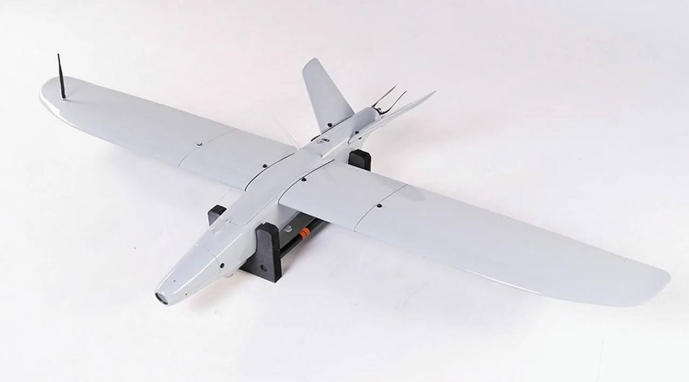
RAM-2S
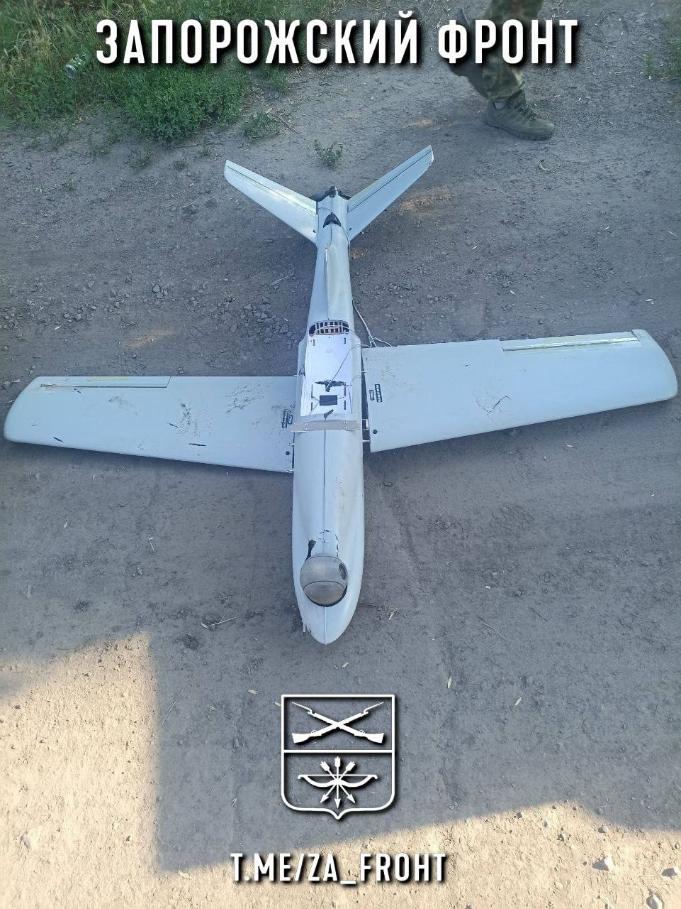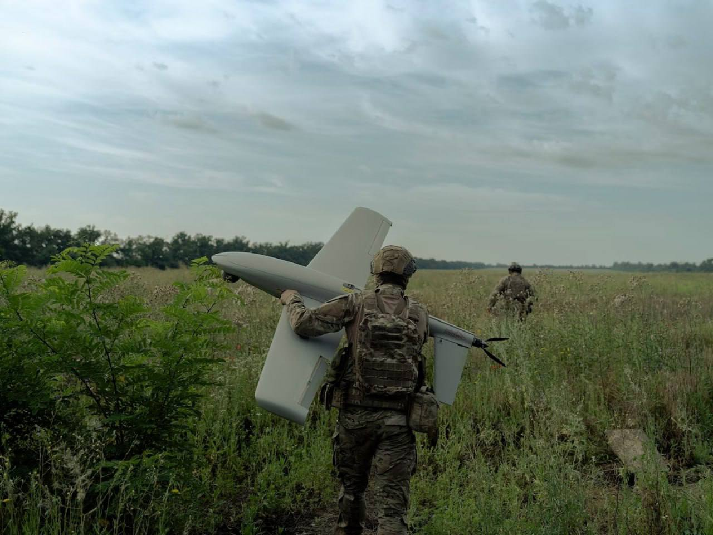
 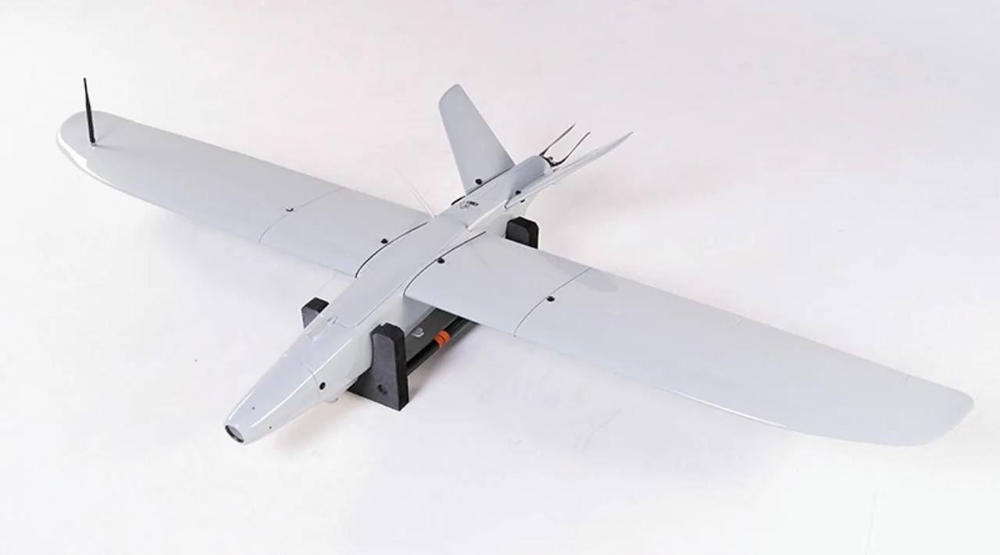
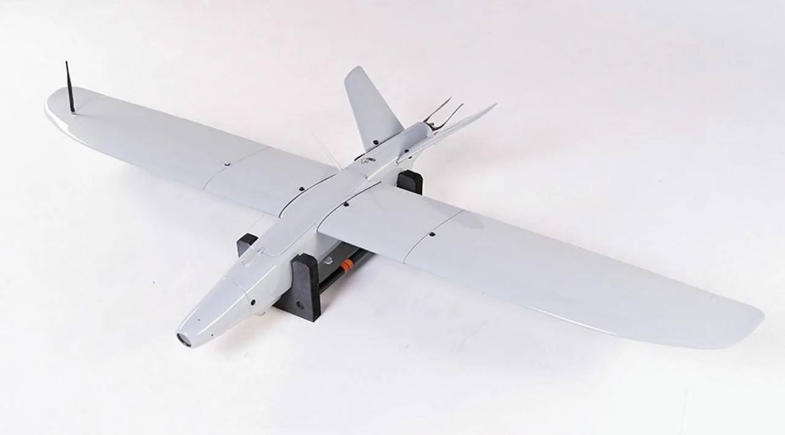
 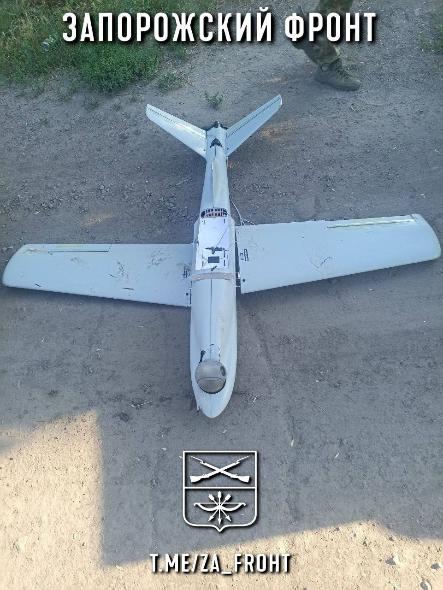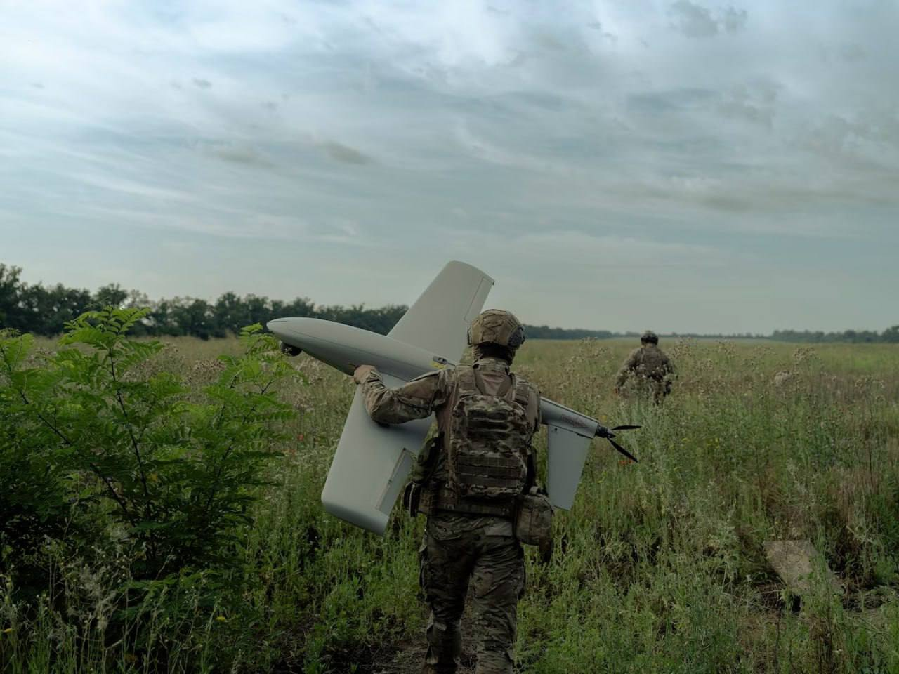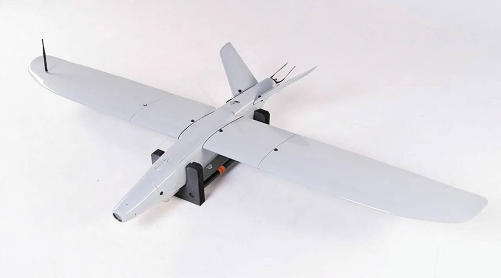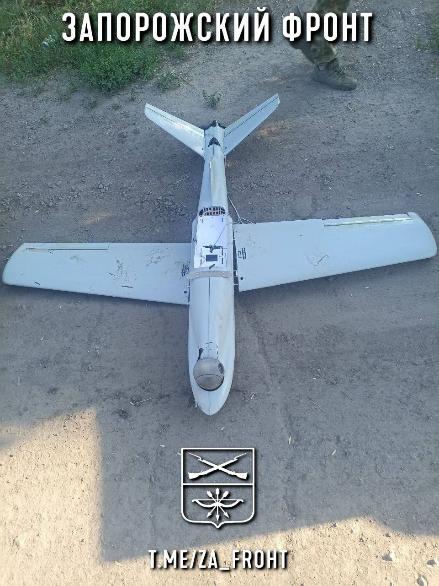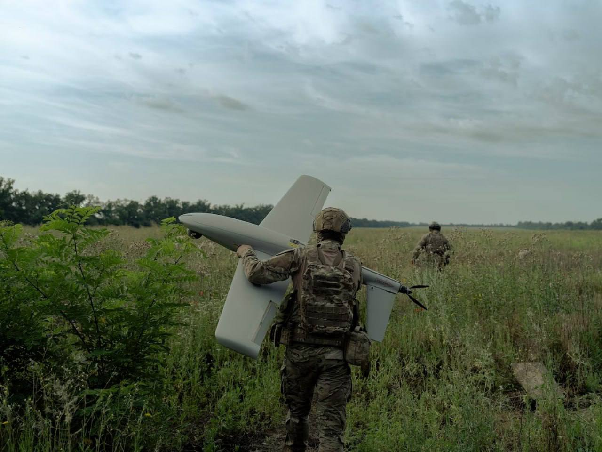
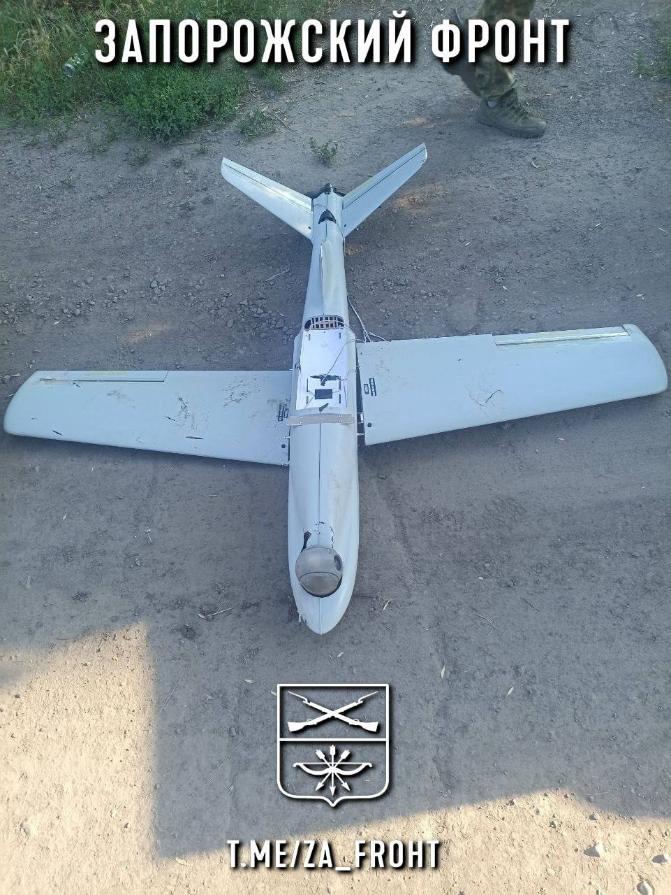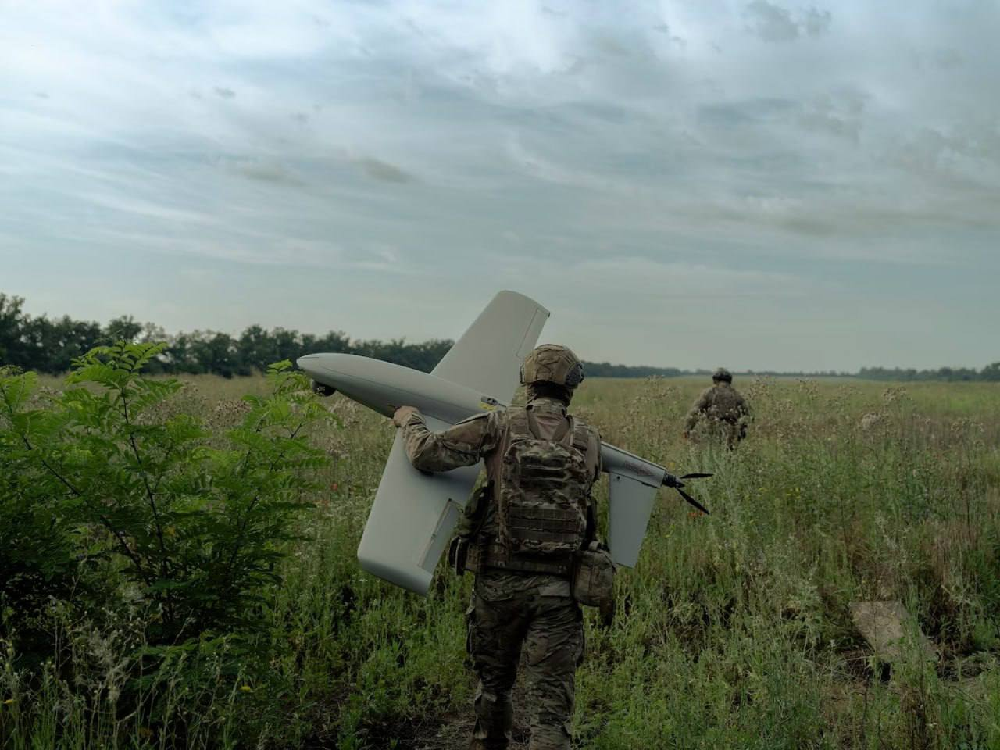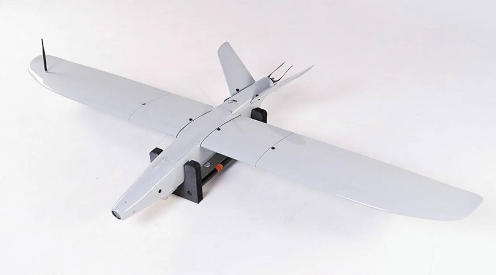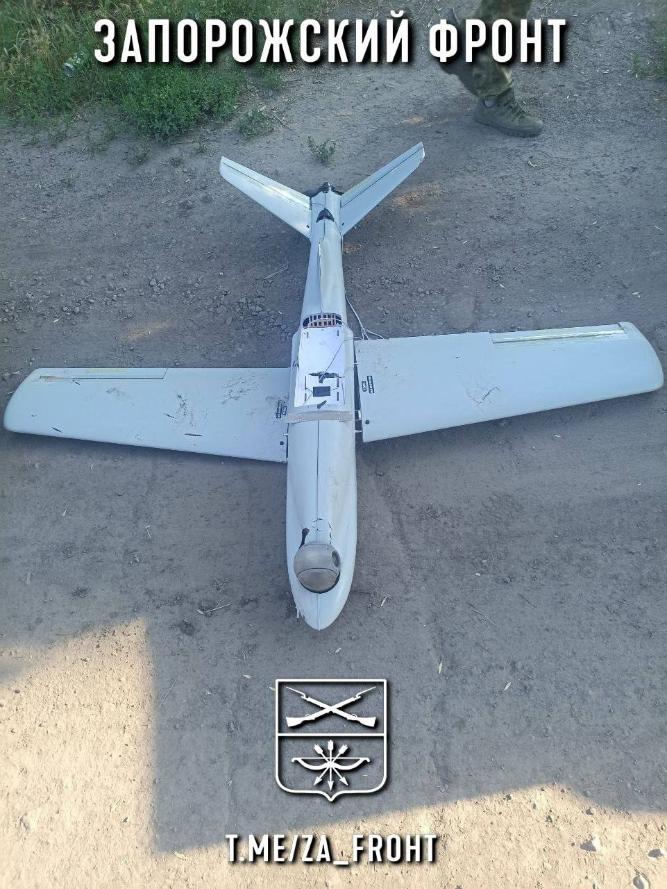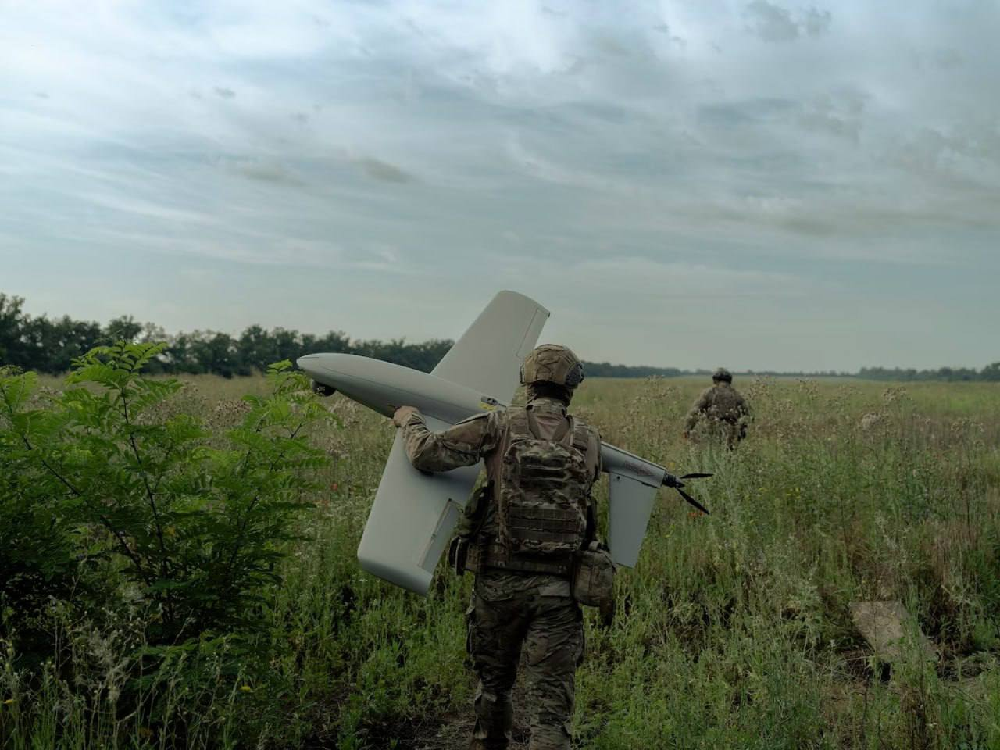